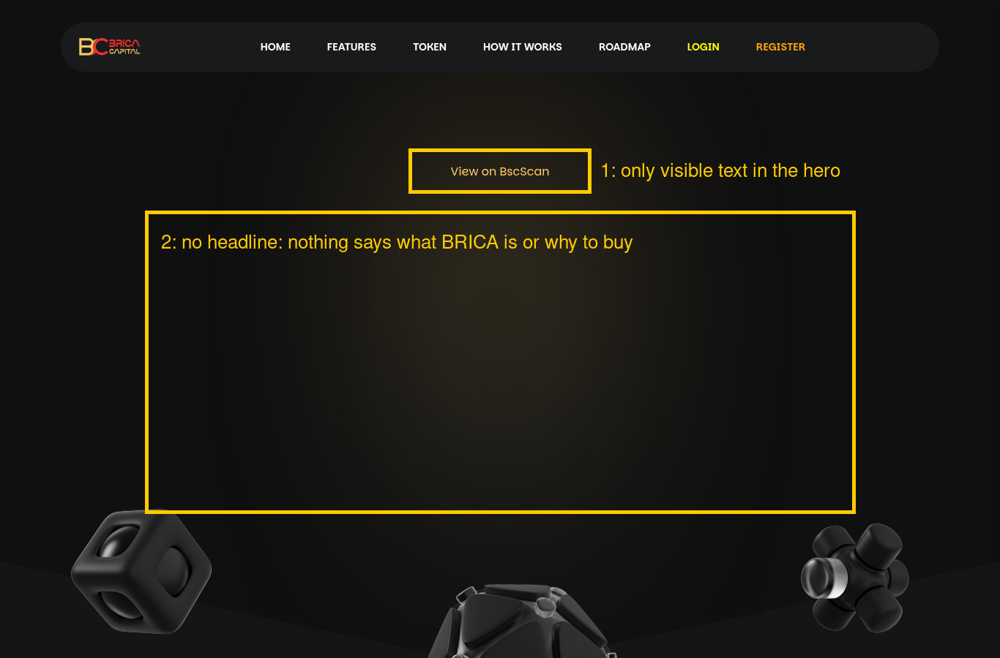

← Black Relay Web3 Site Audits
Site: bricacapital.com · Checked 15 Oct 2026 · Unsolicited public sample, made only from what any visitor can see (public pages and response headers). Not affiliated with or endorsed by Brica Capital (BRICA). Results reflect the site on that date.

The page source has no headline in the hero, just a contract-address line and a "View on BscScan" link. On a desktop screen the big first view shows almost nothing that explains the project (screenshot items 1–2).
Fix: Add a one-line value proposition (H1) and a primary CTA such as "Buy BRICA" or "Read the docs" above the contract address.
The Facebook, Twitter, Instagram, LinkedIn and YouTube icons all link to "#". Visitors checking whether a token is legit click these first, and dead links look like a template that was never finished.
Fix: Link the real accounts, or remove the icons for channels you don't run.
The homepage response has no Strict-Transport-Security, Content-Security-Policy, X-Frame-Options, X-Content-Type-Options or Referrer-Policy header. Without frame protection, the page can be embedded inside another site.
Fix: Add these headers in IIS/Plesk (web.config customHeaders). Start with HSTS, X-Frame-Options: DENY (or a frame-ancestors CSP) and nosniff.
The response headers announce Microsoft-IIS/10.0, X-Powered-By: ASP.NET and X-Powered-By-Plesk, which tells anyone scanning exactly what stack to look at.
Fix: Remove the X-Powered-By headers and the server banner in IIS/Plesk.
Lighthouse (mobile) measured LCP at 8.3 s and first paint at 3.9 s. About 171 KB of JavaScript is unused on load, mostly the tawk.to chat widget and the Swiper slider bundle.
Fix: Load the chat widget only after interaction or idle, and compress/preload the hero image.
The copy-address button and scroll-to-top button have no accessible name, and the stat numbers fail colour contrast (Lighthouse).
Fix: Add aria-label="Copy contract address" and similar labels, and raise the contrast of the stat numbers.
Want the same for your project? Email esa@mail.grokbot.com for a free 3-finding preview. Email only, we never DM.